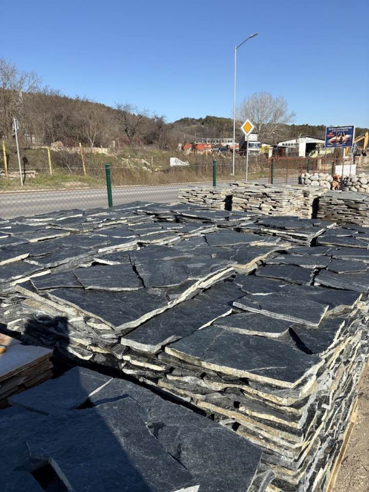
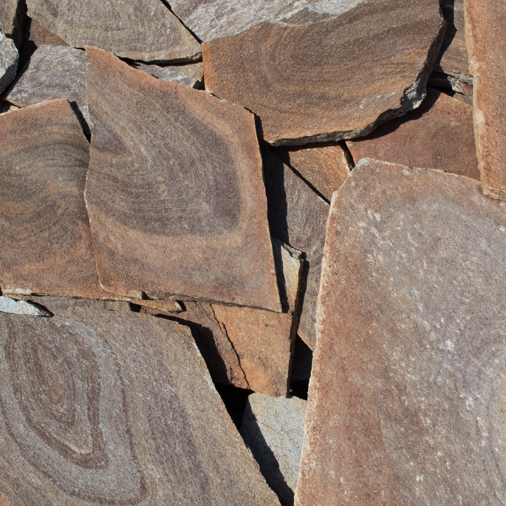

01 / 06
Сив гнайс
- Оформен
- 5 см · 10 см
- Неоформен
- едър · дребен
 Камък гнайс
Камък гнайс
 Строителни материали
Строителни материали
Борса за камък · Варна, кв. Виница
Гнайс от Гоце Делчев и Ивайловград — оформен и неоформен, в шест цвята. Пясък, чакъл, баластра, цимент и още за строежа. Доставяме със собствени самосвали до 3 и до 6 тона.
Цена и наличност ще научите по телефона.
Гнайсът се добива в Родопите. Той е здрав, с грапава, нехлъзгаща се повърхност и издържа на температурни промени — за настилки, стенни облицовки, цокли, камини, алеи и декорация, отвън и вътре. Цветът идва от минералния състав на камъка.
Нарязан на ленти 5, 10 или 15 см.
Естествени плочи — едри или дребни.
Натиснете снимка, за да я видите голяма.
01 / 06

02 / 06

03 / 06

04 / 06

05 / 06

Глиц, кокал, пясъчник и камъни за декорация.

Оформени плочи.

Сив, бежов, жълт, зелен и кафяв. Продава се на палет.


Пясък, чакъл, баластра, цимент, мрежи и бетонови изделия.

На тон и на чували.

Фракции 22/40 мм едър, 4/16 мм Каровча, 5/25 мм Марциана, 4/20 мм Сини вир.

Едра и дребна, промита и пресята. Фракции от 4/16 до 30/60 мм. На тон и на чували.

Варовиков портланд цимент CEM II/A-L 42,5R и CEM II/B-L 32,5R.

Електрозаварени, 4 × 2 м, от стомана Ф4 до Ф10 мм.

Собствен транспорт
ЕМ-13 разполага със собствен транспорт — тристранни самосвали. Камъкът и материалите идват до вас с наши коли.


Ние заедно с вас, клиентите, сме №1, защото доволните клиенти са моята голяма награда за любовта, страстта и амбицията, с които работя, за да ви доставям най-добрата и качествена стока.
ЕМ-13 ООД продава предимно облицовъчен камък гнайс — оформен в различни размери и цветове, неоформен камък за облицовка и настилка, глиц, кокали, пясъчник. Камъкът е от Гоце Делчев и Ивайловград.
Нови снимки от двора и новини от ЕМ-13.